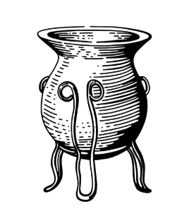
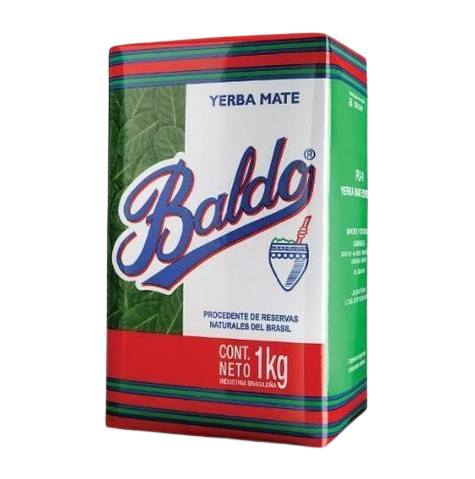
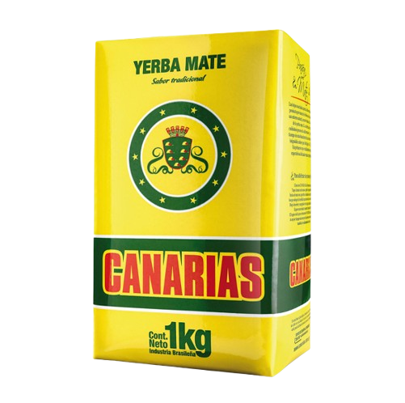
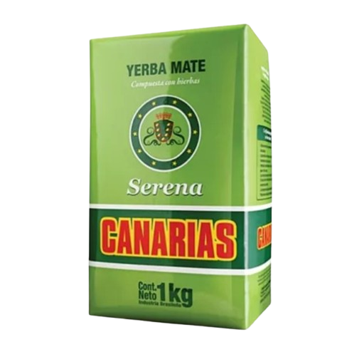
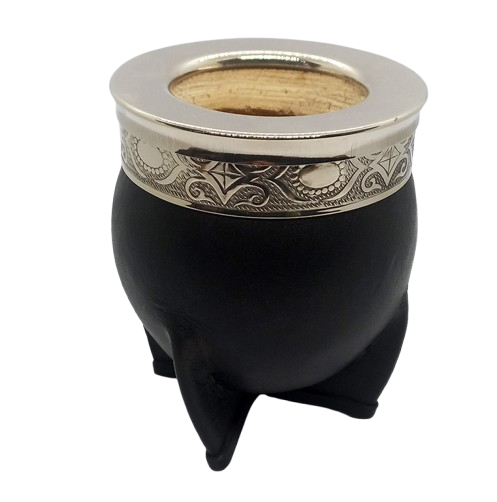
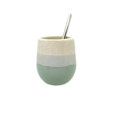
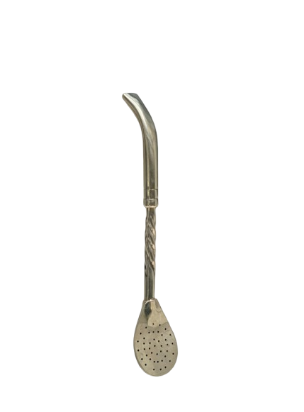
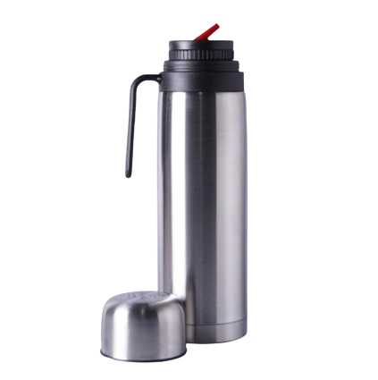
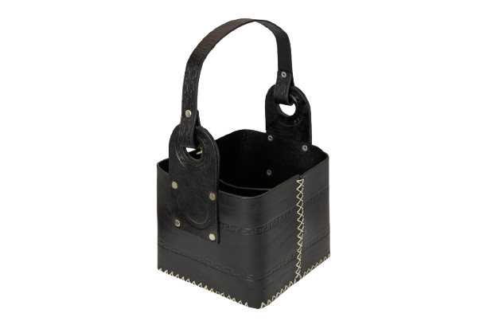

Descubre el auténtico sabor del mate con nuestras selecciones premium de yerbas artesanales y mates tradicionales.
Ver ProductosEl Buen Mate nació en 2007 en las sierras de Córdoba, Argentina, con la misión de llevar la auténtica cultura del mate a todo el mundo. Nuestro fundador, Juan Pérez, creció rodeado de yerbatales y aprendió el arte de la cosecha y secado de la yerba mate de sus abuelos.
Hoy seleccionamos personalmente las mejores hojas de yerba de pequeños productores, asegurando calidad premium y procesos sustentables. Cada uno de nuestros productos está elaborado con dedicación artesanal y amor por las tradiciones.
No solo vendemos yerba y mates, sino que compartimos una pasión y una forma de conectar con los demás alrededor de esta infusión milenaria.

Nuestra yerba clásica, padron uruguayo con un equilibrio perfecto entre hoja y polvo.
$9500 ARS
Comprar

Mezcla especial con peperina, poleo y cedrón de las sierras cordobesas.
$8500 ARS
Comprar
Mates seleccionados y curados naturalmente, cada uno único.
$25000 ARS
Comprar

Bombilla premium de alpaca con diseño ergonómico y filtro mejorado.
$15000 ARS
Comprar
Termo media manija con pico cebador de 1 Litro.
$45000 ARS
Comprar
"La mejor yerba que he probado. Se nota la calidad y el cuidado en el proceso. ¡Ahora todos mis amigos me piden que les lleve cuando voy a visitarlos al exterior!"
"Compré el mate de calabaza y superó todas mis expectativas. Hermoso y con un curado perfecto. El envío fue rápido y bien embalado."
"La yerba con hierbas serranas es mi favorita. El aroma y sabor me transportan directamente a las sierras. ¡Altamente recomendable!"